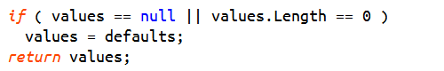
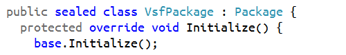
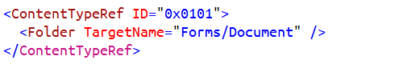

Viasfora
Viasfora
A Visual Studio 2010, 2012, and 2013 extension that adds miscellaneous (but useful!) enhancements to the VS text editing experience.
Current Line Highlight
Highlight the current line in the text editor, like the built-in one
in VS2013, but also available in previous Visual Studio versions.
Customize the look through the "Current Line" entry in the
Fonts and Colors options page.

Control Flow Classifier
Customize how control-flow related keywords in C#, VB, C/C++, JS are rendered
in the VS editor. You can choose which keywords are selected in each language
and customize the presentation through the "Keyword - Flow Control" entry
in the Fonts and Colors options page.

LINQ Classifier
Customize how Language Integrated Query (LINQ) keywords are rendered in the VS editor.
You can choose which keywords are selected for C#, VB, and JS and customize the
presentation through the "Operator - LINQ" entry
in the Fonts and Colors options page.

Visibility Classifier
Customize how visibility related keywords in C#, VB, and C++ are rendered
in the VS editor. You can choose which keywords are selected in each language
and customize the presentation through the "Keyword - Visibility" entry
in the Fonts and Colors options page.

String Escape Characters
Easily recognize escape sequences in your string literals in C#, JS, and C/C++.
Customize the presentation through the "String Escape Sequence" entry
in the Fonts and Colors options page.

Namespace Prefixes
Customize how XML namespace prefixes are rendered in the VS XML editor through
the "XML Prefix" entry in the Fonts and Colors options page.

XML Closing Tags
Render XML closing element tags in a different color color through
the "XML Closing Tag" entry in the Fonts and Colors options page.

Match Element Tags
Highlight matching opening/closing element tags.

Resolve Namespace Prefixes
Put the cursor over an XML namespace prefix, and a tooltip will
tell you what it is mapped to in that context!

Customizable
You can enable/disable specific Viasfora features from the Tools -> Options
dialog in Visual Studio.


You can also customize per-language settings.